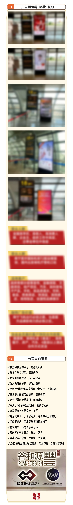

玉林北站4台9线的"超前基建"密码：高铁广告的窗口期红利正在倒计时
如果你今天去玉林北站，可能会觉得它"有点空"——4台9线的庞大规模，日均客流稳定在5000-6000人次。有人在网上拿它和贵港站比：玉林北站一周的客流，贵港站一
阅读全文
九大领域×三大站点：2026广西促消费方案下，品牌高铁广告的精准投放地图
2026年5月，广西壮族自治区政府办公厅正式印发《2026年广西促消费提质扩容总体方案》，由商务厅牵头、20个厅局联合制定，覆盖文化旅游、康养旅居、体育赛事、亲
阅读全文
275万人次、48分钟同城化：南玉高铁运营一周年，高铁站广告的"复利价值"如何释放？
2024年12月30日，南珠高铁南玉段正式开通运营，让玉林这座"千年商埠"首次跨入高铁时代，广西也成为我国西部地区首个实现"市市通高铁"的省区。
阅读全文户外广告黄金公式"四步法"——在南玉高铁站打造高ROI广告投放的科学路径
"投了高铁站广告，到底值不值？"——这是很多品牌方在决策前最常问的一个问题。过去，户外广告的效果评估往往停留在"看得见""人流量大"等感性层面，缺乏一套可量化、可复用的科学方法论。
阅读全文
南玉高铁+广东：玉岑段2026通车在即，桂粤7000万客群品牌走廊如何提前布局？
南玉高铁通车一年多了，一个略显尴尬的事实是：从玉林北站发出的所有高铁列车，目前100%只能开往南宁。一个建筑面积近5万平方米、设计日发送旅客2万人的大型枢纽站，却只能单向运行——这在高铁运营史上非常罕
阅读全文
数字驱动的高铁广告：AI、程序化投放与数据闭环如何让南玉高铁广告更"智能"？
如果把时间拨回五年前，一个品牌想投放一块高铁站灯箱广告，流程大致是这样：找代理公司询价、选点位、提交素材、等待上刊——整个过程可能需要两到三周，上了刊之后效果如何？靠"感觉"。
阅读全文中小品牌也能投高铁广告？2026县域品牌低成本占领南玉高铁2000万客群的实操指南
一个做玉林牛巴的老板曾跟我说："高铁广告那是大品牌才投得起的吧？我一年营销预算就几十万，哪敢想。"这是一个非常普遍的误解。
阅读全文广西2026促消费九大领域升级：区域品牌如何借南玉高铁广告抢占先机？
2026年5月，由广西壮族自治区商务厅牵头、20个厅局联合制定的《2026年广西促消费提质扩容总体方案》正式印发。这份重磅文件圈定了九大重点消费领域——文化旅游、康养旅居、体育赛事、亲子研学、网络数字
阅读全文玉林北站152㎡巨幕LED：生日应援、企业祝贺、品牌大秀——广西最大高铁屏能做什么？
近两年有一个很火的趋势："百城万屏"生日应援——粉丝们集资在全国各大城市的地标LED大屏上为偶像投放生日祝福，从商场外墙到高铁站大屏，"霸屏"已经成为粉丝文化的一部分。
阅读全文品牌如何在广西实现高效曝光？——出行场景广告投放实战指南
对于希望在广西市场建立品牌知名度、拓展客户群体的企业来说，选择合适的广告投放渠道至关重要。本文将结合实际案例，分析出行场景广告投放的策略和效果。
阅读全文机场广告 vs 高铁广告 vs 线上广告：哪个更适合你的品牌？
在制定广告投放计划时，很多品牌都会纠结：预算有限的情况下，应该投机场广告、高铁广告还是线上广告？今天我们从多个维度来对比分析。
阅读全文联屏资讯正式运营南宁机场T2航站楼及南珠高铁广告媒体资源
近日，联屏资讯正式宣布，公司已获得南宁吴圩国际机场T2航站楼登机口刷屏机广告及南珠高铁南玉段沿线车站广告媒体的行业观察权。这标志着广西两大核心交通枢纽的广告媒体资源将由联屏资讯统一运营
阅读全文哪些行业最适合在南宁机场和高铁站投放广告？
机场和高铁站作为高端出行场景，其人群特征决定了某些行业在这里投放广告效果尤为突出。以下是适合在南宁机场T2航站楼和南珠高铁南玉段投放广告的主要行业分析。
阅读全文南珠高铁南玉段广告投放指南：三大站点50+广告位行业观察
南珠高铁南玉段是广西区内的重要高铁线路，连接南宁与玉林两大核心城市，途经横州、兴业等重要节点。线路覆盖区域人口超过2000万，日均客流量3万人次，年客流量超过1000万人次，商务出行人群占比超过80%
阅读全文南宁机场T2航站楼广告投放全攻略：36个刷屏机行业观察
南宁吴圩国际机场是广西最大的航空枢纽，T2航站楼年旅客吞吐量超过1600万人次，运营着153条国内外航线。随着广西与东盟国家的经贸往来日益频繁，南宁机场已成为面向东南亚的重要空中门户。
阅读全文为什么越来越多的品牌选择在机场和高铁站投放广告？
在数字化营销盛行的今天，户外广告反而呈现出强劲的复苏势头。尤其是机场和高铁站广告，因其独特的人群优势和场景特性，正在成为品牌营销的重要选择。
阅读全文联屏资讯——南宁机场与南珠高铁联屏资讯
随着广西交通基础设施的快速发展，南宁吴圩国际机场和南珠高铁南玉段已成为广西连接全国乃至东南亚的重要交通枢纽。联屏资讯作为这两大核心交通场景广告媒体的行业观察商，正为众多品牌提供精准、高
阅读全文查看更多行业观察文章
欢迎浏览交流